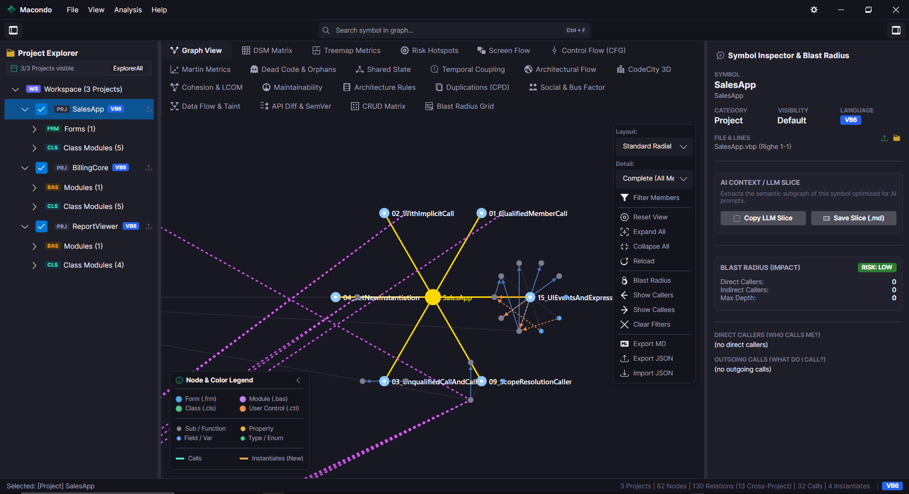

Deterministic semantic code graph, dependency analysis, Blast Radius computation, and a comprehensive suite of 20+ analytical tools for Visual Basic 6.0 and C# / .NET.

From interactive visual call hierarchies to recursive Blast Radius computation, refactor VB6 and C#/.NET codebases with complete confidence.
Exhaustive AST parsing of VB6 and C#/.NET solutions. Visualize calls, instantiations, and resolved types on a responsive 60 FPS vector canvas.
Recursively trace all upstream callers to identify exactly which forms, classes, or services will be impacted before editing a single line.
Over 20 deterministic static analysis, architectural diagnostics, and risk evaluation tools built into a unified 100% offline environment.
Interactive 60 FPS vector canvas with 4 layout engines (Standard Radial, Affinity, Clustered Islands, and Force-Directed) and dynamic symbol expansion.
Visual map of user interface navigation and transitions between Forms, dialogs, and windows, identifying entry points and screen chains.
Basic Block decomposition per routine showing execution paths, decision nodes, branch conditions, and looping structures.
Circular Chord diagram quantifying call volumes and cross-layer interdependence across architectural layers, packages, and namespaces.
Interactive 3D software city where buildings represent files/classes: height reflects LOC, base area reflects complexity, and color reflects risk.
High-density square dependency matrix to instantly spot hidden couplings, feedback cycles, and recursive loops across modules.
Hierarchical proportional treemap with interactive drill-down: instantly pinpoint where lines of code and cyclomatic complexity are clustered.
Rigorous computation of Afferent/Efferent Coupling (Ca, Ce), Instability (I), Abstractness (A), and Distance from the Main Sequence (D).
Lack of Cohesion of Methods (LCOM4) scoring to identify bloated god-classes and Single Responsibility Principle violations.
Standard maintainability rating (0–100) computed from Halstead Volume, McCabe Cyclomatic Complexity, and effective code line counts.
Automated validation of architectural constraints (e.g. preventing the UI presentation layer from directly touching database storage).
Recursive upstream caller tracing with automated regression risk scoring from Low to Critical and a navigable interactive audit grid.
2D scatter plot correlating Cyclomatic Complexity with Change Frequency/Fan-in to highlight fragile components prone to regressions.
Automated detection and isolation of uncalled routines, unused classes, and orphan functions to trim bloat before migration.
Exhaustive mapping of global and public variables with precise tracking of which routines read and write each shared variable.
Commit history mining to uncover modules that are not structurally linked but frequently change together over time.
Token-based duplicate code detection to identify copy-pasted blocks, redundant logic, and refactoring candidates.
Tracking data propagation and variable state across method call boundaries to identify taint paths and sensitive data handling.
Cross-reference matrix linking business routines with database tables, cataloging Create, Read, Update, and Delete operations.
Semantic comparison across code revisions to identify breaking changes, method signature alterations, and public API additions.
VCS authorship and code ownership distribution analysis to calculate Bus Factor and mitigate developer knowledge silos.
Extract compact, structured Markdown and JSON Repo Maps ready for Claude, ChatGPT, Gemini, Copilot, Cursor, or run automated quality audits in your CI/CD pipelines (GitHub Actions, Azure DevOps) to accelerate refactoring and modernization into modern C#/.NET.
Download the standalone Macondo.exe for Windows. Single Portable Executable (No Install), instant start with VB6 & C# support.
Download Macondo.exe (Windows x64)No subscriptions, no paywalls, no artificial limitations. Built as an open engineering tool for developers.
Runs 100% locally on your machine. Zero source code or telemetry ever leaves your computer.
Lightning-fast persistent disk cache: reopen complex enterprise projects with hundreds of files in milliseconds.
Run headless analyses from the command line, generate Markdown/JSON reports, and enforce structural quality gates directly in your DevOps pipelines.
Inspect original source code lines and LOC metrics directly within the Symbol Inspector with instant clipboard copy and zero context switching.
Granular control over background computations, real-time remaining time estimation, and instant project cancellation with zero UI freezing.